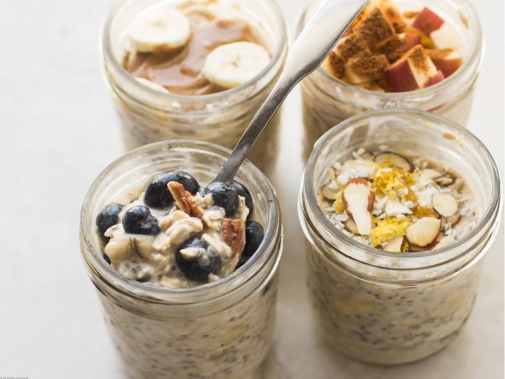

Overnight Oats
Ingredients
- 1/3 to 1/2 cup liquid such as dairy milk, almond, cashew or coconut milk
- 1/3 to 1/2 cup old-fashioned rolled oats
- 1/3 to 1/2 cup yogurt, optional
- 1 teaspoon chia seeds, optional but highly recommended
- 1/2 banana, mashed, optional
- Serving suggestions: fruit (fresh or dried), nuts, nut butter, seeds,
protein powder, granola, coconut, spices, citrus zest and vanilla extract
Directions
- Add the desired amounts of milk, oats, yogurt,
chia seeds and banana to a jar or container and give them a good stir.
Refrigerate overnight or for at least 5 hours.
- In the morning, add additional liquid if you'd like. Once you achieve the desired consistency,
top with fruit, nuts, nut butter, seeds, protein powder,
granola, coconut, spices, zest or vanilla extract.
Chef's Note
The mixture will keep for up to 2 days.
If you don't add the banana, up to 4 days.
However, once you are experienced, you'll have no problem whipping up another batch midweek if needed!
credit: foodnetwork.com